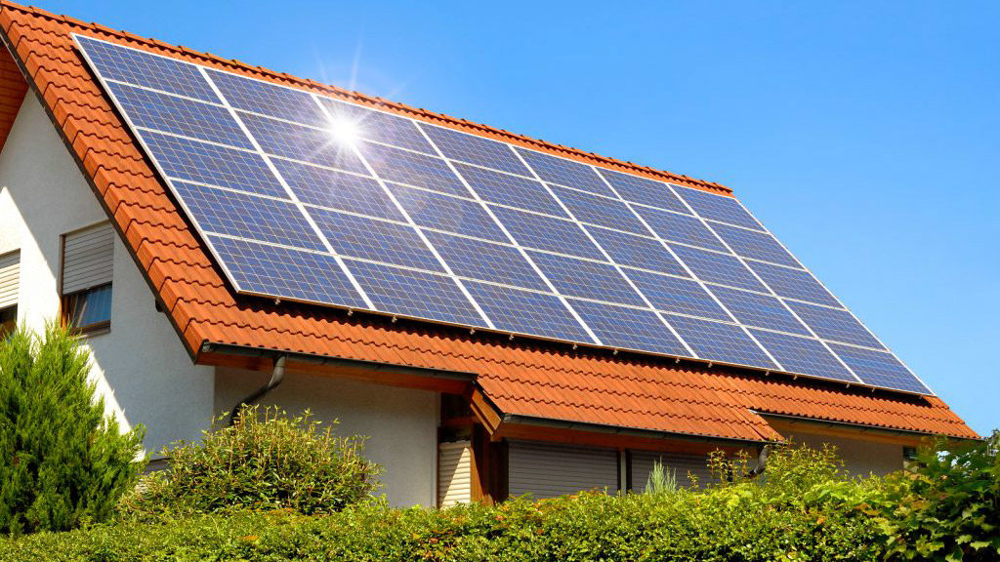
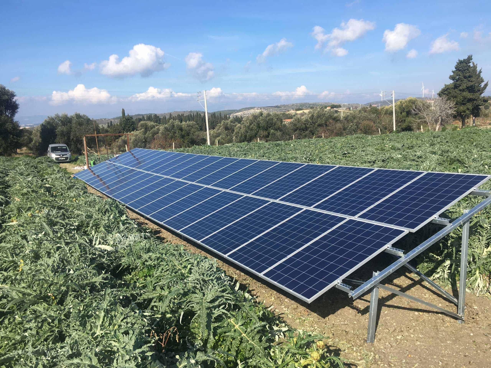
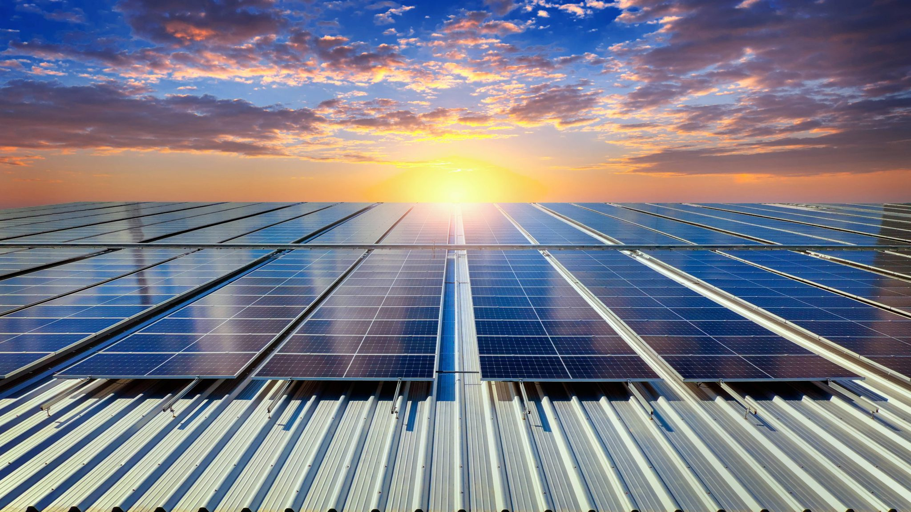
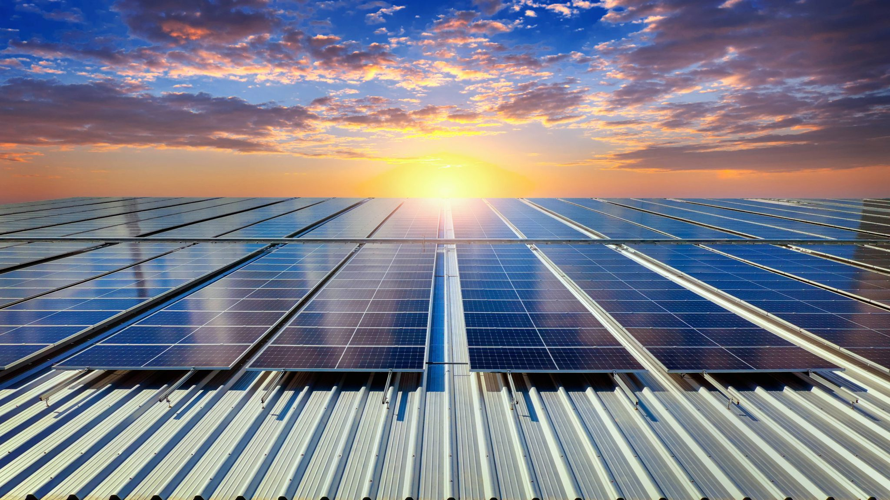
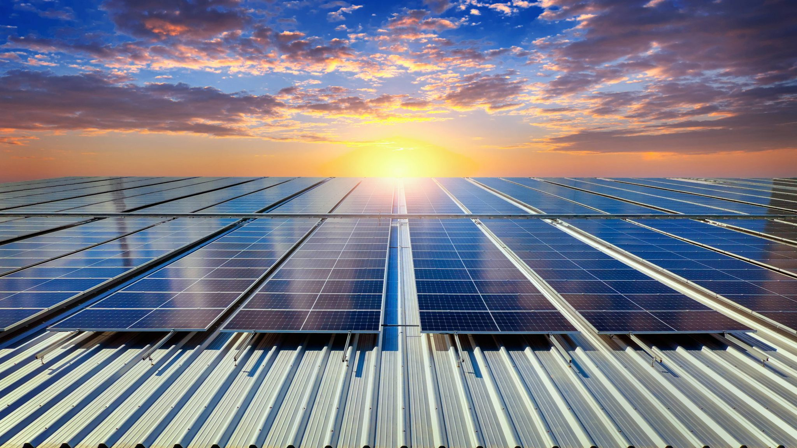
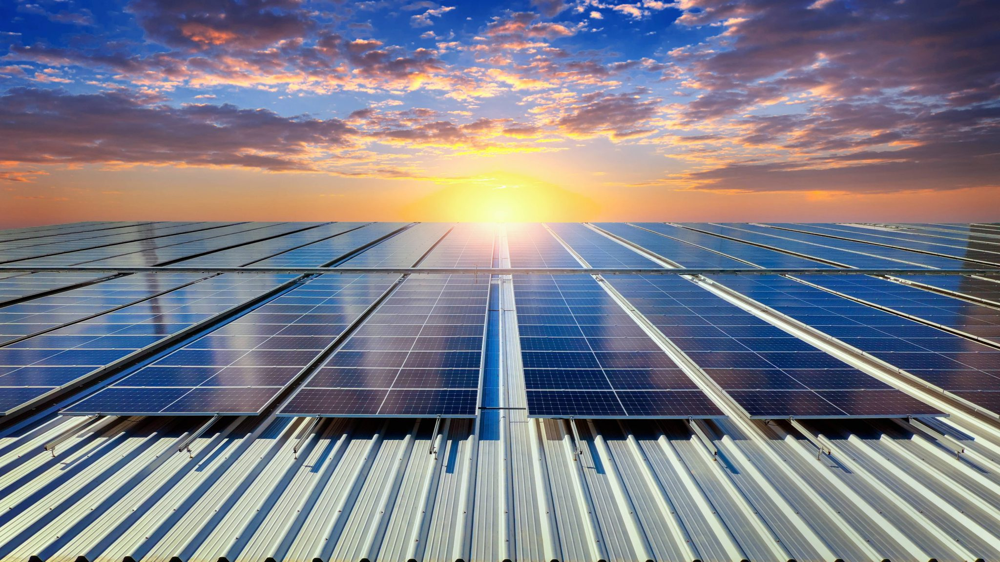
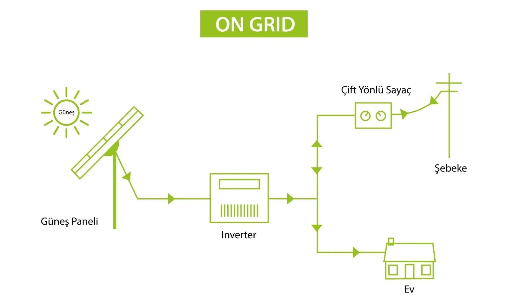
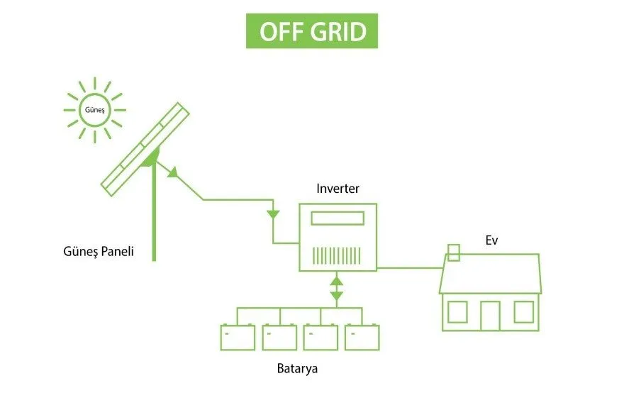
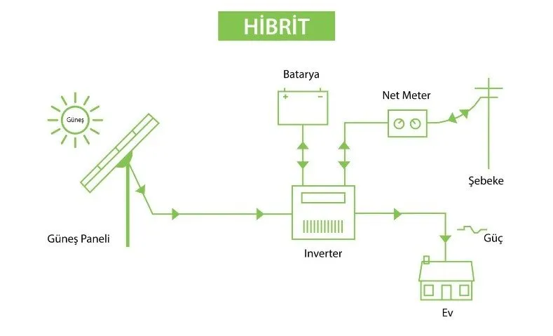
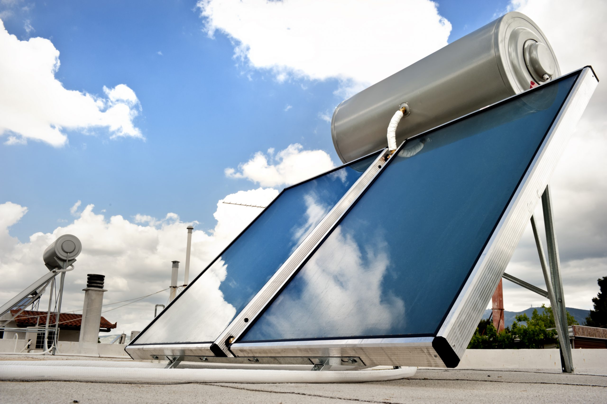

 



Güneş enerjisi, Güneş’in çekirdeğinde meydana gelen nükleer füzyon süreciyle ortaya çıkan ve uzaya yayılan ışık ve ısı enerjisidir. Bu enerji, yeryüzündeki yaşamın ana kaynağıdır ve aynı zamanda teknolojik sistemler aracılığıyla insanlığın enerji ihtiyacını karşılamak için de kullanılır. Güneş enerjisi sistemleri, Güneş’ten gelen ışığı ve ısıyı kullanarak elektrik veya ısı enerjisine dönüştüren teknolojik çözümlerdir. Bu sistemlerin temel amacı, sonsuz ve temiz bir enerji kaynağı olan güneşi kullanarak, fosil yakıtlara olan bağımlılığı azaltmak ve çevresel sürdürülebilirliğe katkıda bulunmaktır.

Güneş enerjisi sistemleri, temel olarak enerjiyi toplama ve kullanma şekillerine göre iki ana kategoriye ayrılır:
Sistemin en temel ve en belirgin parçasıdır. Fotovoltaik hücrelerden oluşur. Fotovoltaik hücreler güneş ışığını doğrudan doğru akım (DC) elektrik enerjisine dönüştürme görevini üstlenir.Güneş paneli, üzerine gelen güneş ışığını emmeye yarayan solar hücrelerden oluşur. Bir güneş panelinin verimi, kullanıldığı hücrenin güneş ışığını elektriğe dönüştürme oranı ile belirlenir.
Sistemin en kritik bileşenlerinden biridir. Güneş panellerinden gelen doğru akımı (DC), evlerimizde ve iş yerlerimizde kullandığımız alternatif akıma (AC) dönüştürür. Bu dönüşüm olmadan, üretilen elektrik enerjisi elektronik cihazları çalıştırmak için kullanılamaz.
Her sistemde bulunması zorunlu değildir. Gündüz saatlerinde üretilen fazla elektriği depolar. Güneşin olmadığı zamanlarda bu depolanmış enerjiyi kullanarak elektrik sağlar.
Güneş panellerinin çatıya, araziye veya cepheye güvenli bir şekilde monte edilmesini sağlar.Solar panellerin yerinde kalmasını, çevresel koşullara dayanmasını ve enerji emilimi için optimum açılarda kalmasını sağlarlar. Bu sistemler, hem konut hem de ticari solar kurulumlar için çok önemlidir.
Sistem içindeki tüm bileşenler arasında elektrik akımını taşır.Devre kesiciler, sigortalar gibi koruma ekipmanları, sistemi aşırı gerilim ve kısa devre gibi risklere karşı korur.
Güneş ışığını doğrudan elektrik enerjisine dönüştüren bu sistemler, güneş panelleri aracılığıyla "fotovoltaik etki" adı verilen bir süreçle doğru akım (DC) üretir. Bu enerji, daha sonra evlerde ve iş yerlerinde kullanılabilmesi için alternatif akıma (AC) dönüştürülür. Fotovoltaik sistemler, kurulum amaçlarına göre kendi içinde de farklılaşır:
Doğrudan elektrik şebekesine entegre çalışır. Üretilen enerji, öncelikli olarak konutun veya işletmenin kendi ihtiyacını karşılar. Fazla enerji, şebekeye satılırken, ihtiyaç duyulduğunda şebekeden enerji alınabilir. Bu sistemler, özellikle kentsel alanlarda ve elektrik şebekesinin mevcut olduğu yerlerde yaygın olarak kullanılır.
Elektrik şebekesinin ulaşmadığı kırsal bölgeler, karavanlar veya tekneler gibi yerler için idealdir. Bu sistemler, üretilen enerjiyi bataryalarda depolar ve bu sayede elektrik kesintilerinden etkilenmeden sürekli enerji sağlar.Bir diğer adına akülü sistemler diyebiliriz
Hem şebekeye bağlı olma hem de batarya ile depolama özelliklerini bir araya getiren hibrit sistemler, kullanıcılara maksimum esneklik sunar. Elektrik kesintisi durumlarında yedek güç kaynağı olarak bataryaları kullanırken, günlük enerji ihtiyacını şebeke ile dengeleyebilir.Basit bir ifadeyle, aküler ile desteklenmiş şebekeye bağlı güneş enerjisi sistemi olarak tanımlanabilir.
Güneşten gelen ışınımı ısı enerjisine dönüştüren sistemlerdir.Elektrik üretmez, doğrudan ısı üretir.Fotovoltaik (PV) panellerin aksine, bu sistemler güneş ışığını doğrudan elektrik enerjisine değil, ısıya dönüştürerek çalışır.En yaygın kullanım alanı su ısıtmadır.Evsel Sıcak Su Sistemleri,Merkezi Isıtma Sistemleri,Endüstriyel Proses Isıtması gibi alanlarda kullanılır
